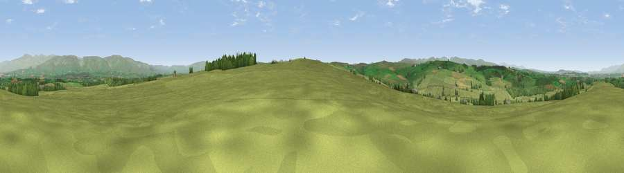

Viewpoint near Maulds Meaburn
#11016 in England · top 43% of its area beats it · near Maulds MeaburnThe view, rendered

A 360° render of this exact spot computed from the terrain model, tree cover and land cover — summer colours, afternoon light, calibrated against photographs of famous viewpoints. Real trees, hedges and buildings will differ in detail.
The panorama
Grey silhouette: terrain skyline in each direction (720 bearings, Earth curvature and refraction included). Dashed green: skyline with trees (+15 m) and buildings (+8 m) as obstacles. Blue strip: how far the ground is visible on each bearing.
Where the view opens
Wedge length = distance to the farthest visible ground on that bearing (vegetation-aware). Rings at 10, 25 and 50 km.
What fills the view
91% grassland · 6% woodland · 2% cropland ·
Angular shares of the visible panorama (visual magnitude), not map area. Landscape diversity 0.16 (0–1 Shannon).
Key numbers
More beautiful places nearby
The staircase of upgrades: each row has a higher view potential than everything closer. Driving times are estimates from straight-line distance, calibrated against real road routing — check an actual route before setting out.
| Place | Direction | Drive | Score |
|---|---|---|---|
| Viewpoint near Maulds Meaburn | S · 1 km | ~2 min | 62.2 |
| Linglow Hill | SSE · 4 km | ~9 min | 66.8 |
| Long Scar Pike [Coalpit Hill] | SW · 7 km | ~14 min | 68.9 |
| Long Fell | SW · 11 km | ~20 min | 72.4 |
| Murton Pike | NE · 12 km | ~23 min | 75.0 |
| Viewpoint near Hilton | ENE · 12 km | ~23 min | 75.2 |
| Hugh's Laithes Pike | W · 14 km | ~25 min | 76.8 |
| Bampton Fell | W · 15 km | ~27 min | 77.7 |
54.53684, -2.56136 · source: screening · position refined by local search. Computed location — check access rights before visiting.